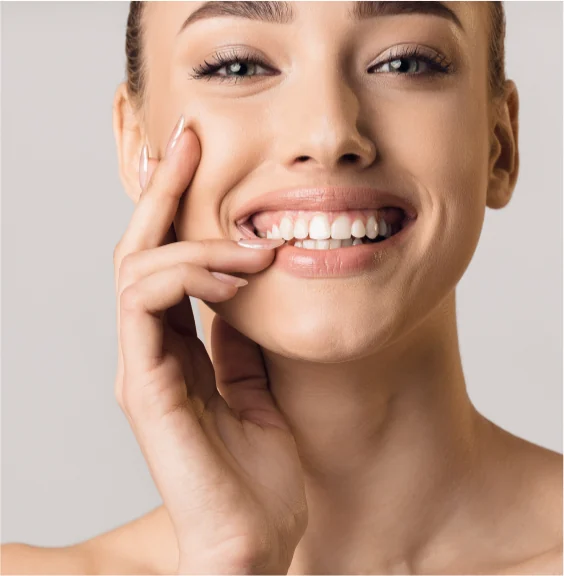
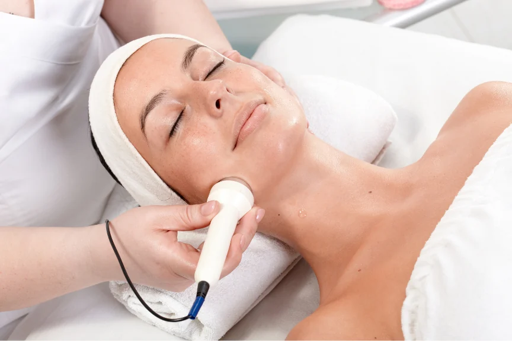
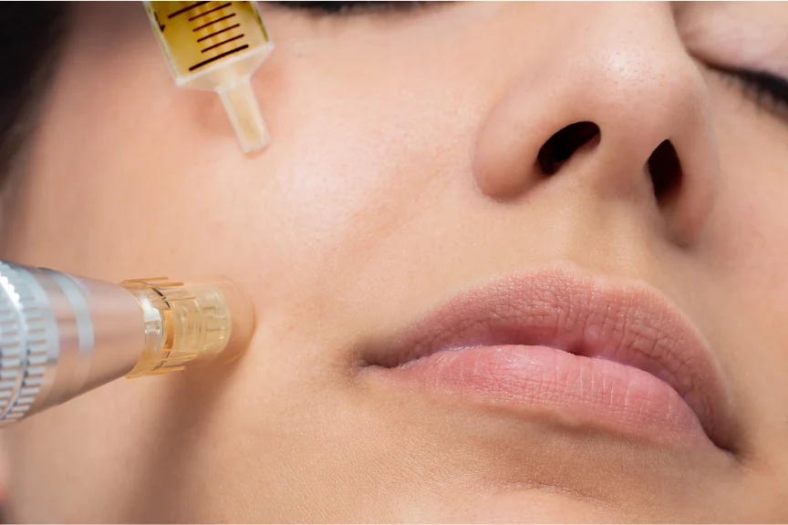
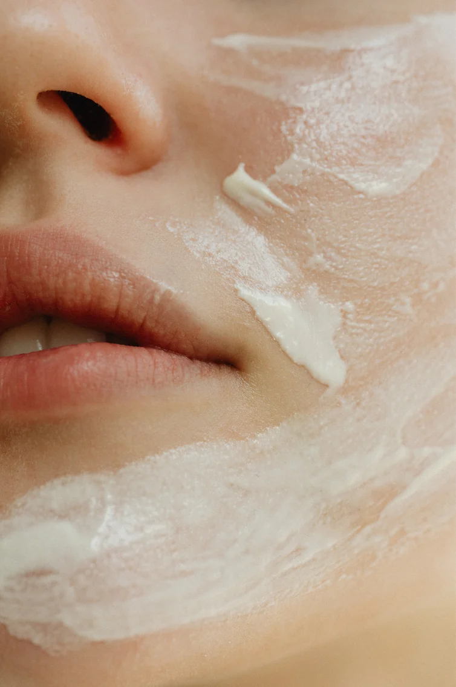
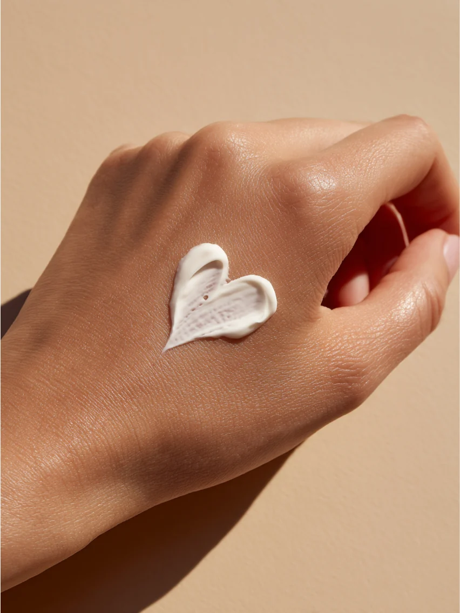

Belico arckezelések
Skin regeneration érzékeny bőrre és Hydro energy mélyhidratáló kezelés, 35 év fölött.
Megnézem a kezeléstGondoskodás a bőrödnek, nyugalom neked. Természetes hatóanyagokkal és modern technológiákkal segítek megtalálni a bőrödhöz illő ápolást.

Hidratálás, bőrfiatalítás vagy célzott segítség a problémás bőrnek. Az első találkozáskor együtt találjuk meg a számodra megfelelő kezelési irányt.
Skin regeneration érzékeny bőrre és Hydro energy mélyhidratáló kezelés, 35 év fölött.
Megnézem a kezelést
Célzott arc-, nyak- és dekoltázsápolás, személyre szabott hatóanyagokkal, 40 év fölött.
Megnézem a kezelést
Anti-akné kezelések és egyéni bőrápolási tanácsok fiataloknak is.
Megnézem a kezelést
Minden bőr egyedi. A kezelési tervet a bőröd aktuális állapotához és igényeihez igazítom.
Minden kezelés privát, nyugodt élmény. Itt van idő a kérdéseidre és az otthoni ápolás megbeszélésére is.
Gondosan kiválasztott hatóanyagokkal és modern kozmetikai technológiákkal dolgozom.
Elégedettségi garancia
Ha az 5 alkalmas kúra után nem vagy elégedett, a kúra díjának 50%-át visszatérítem.
Sipos Eliza vagyok, az Eliza Beauty Salon megálmodója. 14 éve segítek vendégeimnek abban, hogy bőrük egészségesebb, fiatalosabb és ragyogóbb legyen.
A Beauty Academy szakmai trénereként és mesterkozmetikusként is abban hiszek, hogy a valódi törődés mindig személyes. Nálam nincs sablonkezelés: megismerem a bőrödet, meghallgatlak, és együtt alakítjuk ki a hozzád illő ápolást.

„Korábbi rossz tapasztalatok miatt sokáig nem mertem kozmetikushoz járni, de ez az itt töltött első alkalmat követően megváltozott. A bőröm minden kezelés után szinte ragyog, remekül érzem magam, és Eliza segítségével sikerült kialakítanom a helyes, bőrtípusomnak megfelelő arcápolási rutint. Szívből ajánlom!”
„Eliza nagyon kedves, csupaszív kozmetikus, a kozmetika csodaszép, tiszta, hangulatos, mindig örömmel járok ide vissza. Legutóbb a 10 alkalmas arcfiatalító kezelést vettem igénybe, és az eredmény magáért beszél, azóta több pozitív visszajelzést is kaptam ismerőseimtől. Csak ajánlani tudom Elizát!”
Nem kell előre tudnod, melyik kezelésre van szükséged. Segítek eligazodni.
Telefonon vagy az űrlapon keresztül tudsz bejelentkezni. Az időpontot személyesen egyeztetem vissza.
Megismerem a bőröd állapotát és arcápolási szokásaidat, majd összeállítom a kezelési tervet.
A személyre szabott kezeléshez relaxáló arcmasszázs is társul, hogy te is feltöltődhess.
Praktikus útmutatást kapsz a bőrödnek megfelelő mindennapi ápolás kialakításához.
A kezelés ideje a bőrödről és a feltöltődésedről szól.



Összegyűjtöttem a leggyakoribb kérdéseket. Ha másra is kíváncsi vagy, keress bizalommal.
Nem, a kozmetikámban kizárólag időpontra fogadok vendégeket.
Az első találkozás alkalmával a kezelés előtt diagnosztizálom a bőrödet, és felvázolom a kezelési tervet.
Igen, természetesen! Az első alkalmat követően elmondom, hogy mire figyelj a mindennapokban, milyen termékeket használj, hogy a bőröd a lehető legjobb törődést kapja.
Bankkártyával és készpénzzel is fizethetsz a szalonban.
Kérdésed van a kezelésekről, vagy időpontot szeretnél egyeztetni? Keress bizalommal, és segítek megtalálni a számodra legjobb megoldást!
Kizárólag előre egyeztetett időpontra.